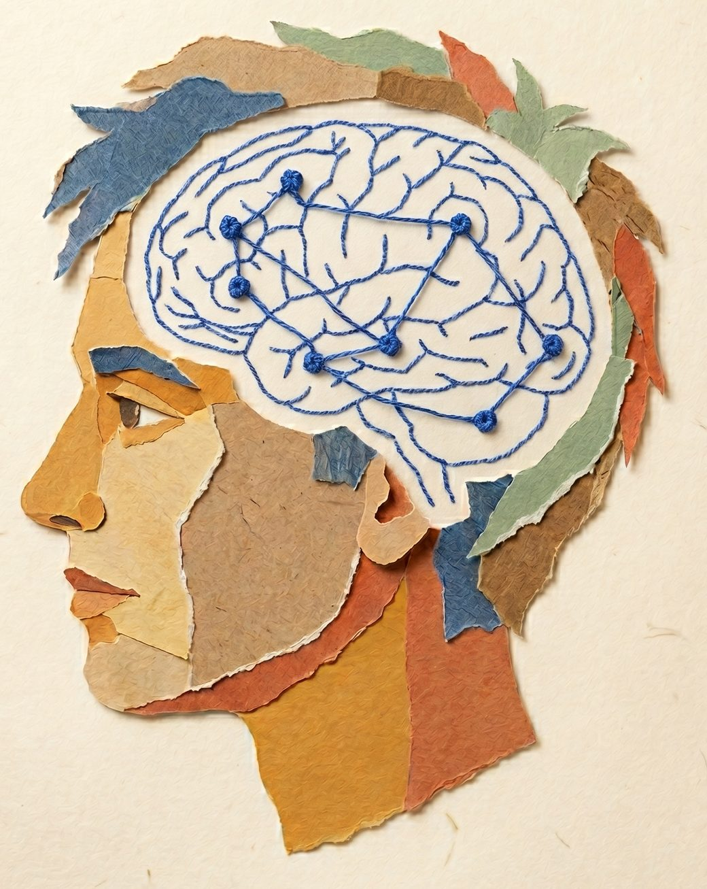
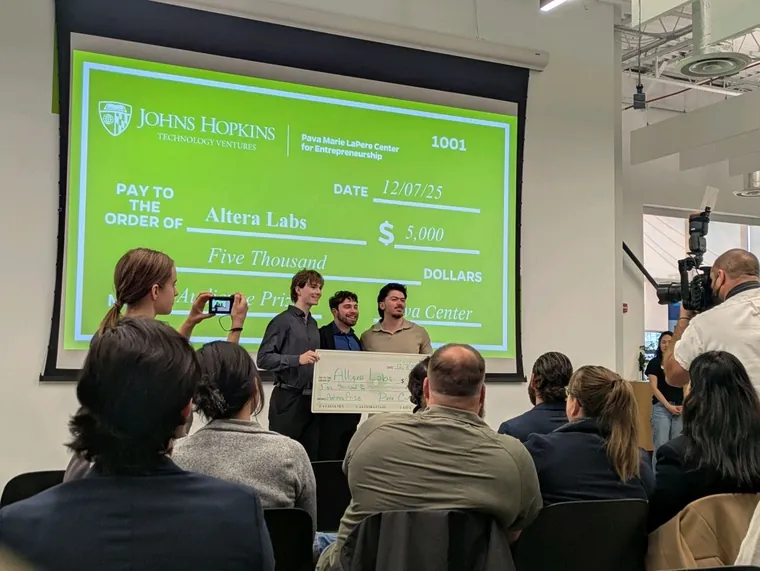
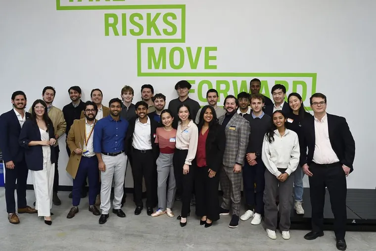
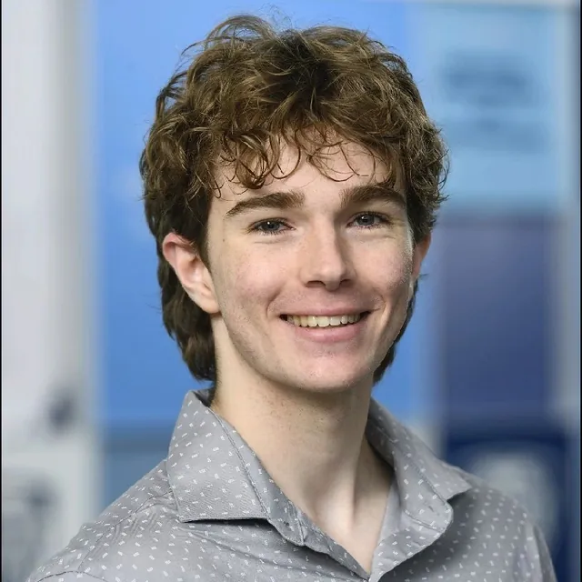
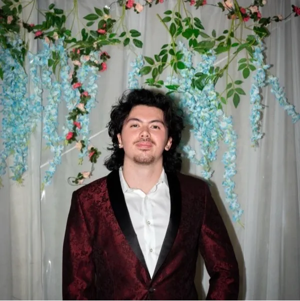

Peter Seelman
CEOJohns Hopkins University
BS, Physics · BA, Mathematics
Leads product direction and institutional strategy. Background in AI systems at JHU APL and NASA, with a focus on turning technical research into tools for real classrooms.
Altera is not another AI chatbot. It shows you, concept by concept, what the students in your Canvas course can recall, apply, and analyze. You see where the course is getting through and where it needs a different approach, with zero extra work for you.

Current AI tools create a "substitution" effect: students bypass the reasoning that builds durable skills. The result is measurable learning loss, and a "black box" that leaves instructors blind to what their students can actually do.
OutcomeStudent bypasses reasoning entirely.
92%
88%
17%
90%
Altera maps your course as a network of concepts: the Cognitive Core. It tracks how well each concept is landing: whether the skill will still be there next month, and how solid the foundations underneath it are.
"A tool that would be indispensable to me as an instructor."Prof. Kobe Marshall-Stevens, JHU Mathematics
Five layers that turn passive AI into a system that teaches.
Altera uses Probabilistic Mastery Tracking to calculate the Sustainable Mastery Index (SMI), a composite metric that estimates how stable and durable each student's command of a concept is. It is built to distinguish mastery that lasts from ephemeral memorization.
Mastery Computation Chain
Per concept node, refreshed after every relevant interaction
See, before your next class, which concepts are landing and which need a different approach. Drill down to an individual student only when you choose to.
Altera does not hand over the answer. It uses Socratic Scouting to find where you're stuck and gives hints that bridge the gap, personalized to your learning path.
 Integration Partner
Integration Partner
One click and your class is live. Altera syncs directly with Canvas: rosters, logins, and grades handled automatically. No new accounts, no manual setup.
Deans and program directors get a bird's-eye view of institutional performance, mapping where structural curriculum gaps are causing students to fail across courses and semesters.
This is the graph that powers every Altera course. Each node is a concept from a Physics I syllabus. Edges encode prerequisite, component, analogy, and conflict relationships. Mastery is scored per concept and rolls up into the course-level picture your dashboard shows. Altera builds this map from your own syllabus, so it works for any course. No publisher textbook required.
Green nodes have high SMI: the concept is sticking for the long term. Red nodes are where the course needs a different approach. Colors update after every interaction.
Bigger nodes are higher-leverage concepts. Once a class is solid on "Newton's Second Law," downstream topics like projectile motion and friction become easier to teach.
Solid lines are prerequisites, dashed lines are components, and red lines flag conflicts with misconceptions. When a student gets stuck, the tutor walks these edges to find what's missing.
"I've detected a Calculation Error pattern linked to your Newton's Second Law mastery (35%). Let's revisit: if a 5kg block sits on a frictionless incline, how would you set up ΣF = ma along the incline?"
Awarded a $49,838 TEDCO Baltimore Innovation Initiative grant for "Altera Core: Adaptive Knowledge Tracking for Canvas-Native STEM Higher Education," funding a 9-month build at JHU.
Read AnnouncementAccepted into the Google Cloud for Startups program, securing cloud infrastructure credits and technical support to scale our platform.

Accepted into NVIDIA Inception, gaining access to GPU cloud credits, DGX Cloud, and NVIDIA's deep learning ecosystem to accelerate our AI engine.
Signed a commercial LTI 1.3 license with Instructure at the Integrated partner tier, so Altera ships inside any Canvas course and is listed in the Canvas partner directory.

Won the $5,000 Audience Award at the 2025 Johns Hopkins Fuel Demo Day, an audience-voted win that showed strong student and faculty interest in the approach.
Read Article
Secured endorsement from Prof. Kobe Marshall-Stevens (JHU Mathematics) as primary Faculty Champion for the TEDCO Baltimore Innovation Initiative.
"I strongly believe that the platform has potential to scale to large-scale classes with hundreds of students. I am hopeful that their platform will help to better shape university environments in the years to come."Prof. Kobe Marshall-Stevens
Strategic shift from "Verifiable AI" (Lean 4) to State-Aware Cognitive Modeling. Prioritizing scalable mastery tracking over formal proof correctness.
Accepted into the JHU Pava Marie LaPere Center Fuel Accelerator. Selected as part of a high-growth cohort for ed-tech venture development.

CEO publishes "AI and Education: A Neurocognitive Perspective" at Johns Hopkins, establishing the scientific foundation for Altera's state-aware approach. The paper synthesizes research demonstrating a significant negative correlation between AI tool use and critical thinking (Gerlich, 2025).
Read PaperAltera has raised nearly $60,000 in non-dilutive funding, led by a $49,838 TEDCO Baltimore Innovation Initiative award. Our founding team has raised over $190,000 for previous ventures, progressed through the JHU Pava Center's Spark and Fuel accelerators, and completed NSF I-Corps.
Johns Hopkins University
BS, Physics · BA, Mathematics
Leads product direction and institutional strategy. Background in AI systems at JHU APL and NASA, with a focus on turning technical research into tools for real classrooms.

Johns Hopkins University
BS/MSE, Biomedical Engineering · BS, Applied Mathematics & Statistics
JHU BME and Applied Math researcher specializing in learning outcome modeling, neurocognitive data analysis, and statistical validation of product efficacy.

Johns Hopkins University
BS Computer Science · BS Applied Mathematics & Statistics
Former Amazon software engineer with expertise in full-stack development, AI systems, and rigorous software engineering practices.
Johns Hopkins University
BS, Biomedical Engineering
JHU BME researcher and outreach lead with experience in mentoring, stakeholder coordination, and program execution. Brings an educational-equity lens that helps Altera design for access, adoption, and real student outcomes.
Domain, institutional, and commercial validation from leading experts.
Mathematics Faculty, JHU
Faculty Champion & Pilot Data
Primary Faculty Champion providing direct access to our pilot cohort and the ground-truth data to validate our mastery model.
Director of Undergraduate Studies, JHU Mathematics
Institutional Adoption & Procurement
Our "voice of the customer," guiding procurement strategy and institutional adoption pathways.
Global Developer Marketing Manager, Google
Go-To-Market & Developer Ecosystem
15+ year Google veteran who scaled developer communities and startup accelerator programs globally. Brings proven GTM playbooks and direct access to Google's developer and startup networks.
Founder & CEO, ProCounsel
Fuel Program Advisor
JHU CS & Economics alum. Bisciotti Award winner and founder of ProCounsel, an AI-powered legal discovery platform.